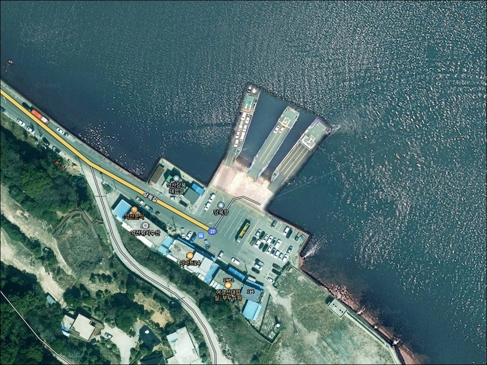
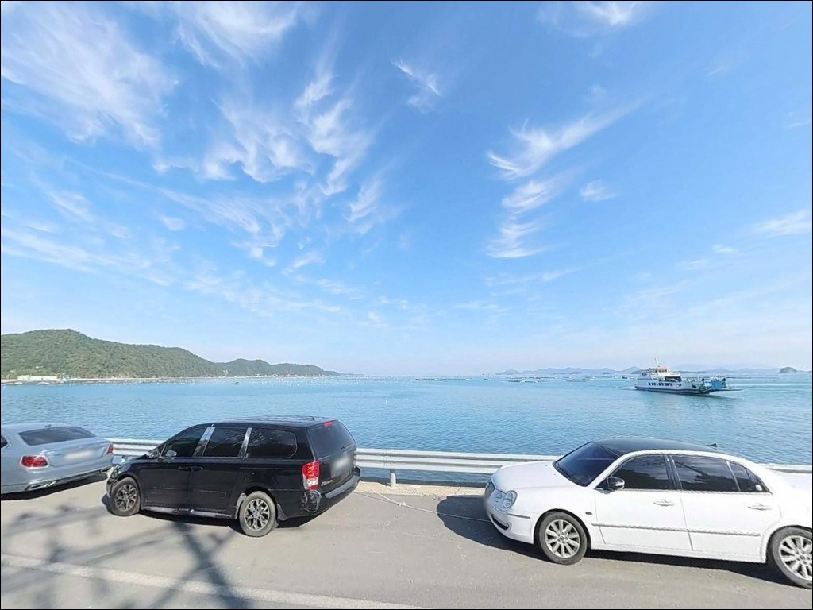
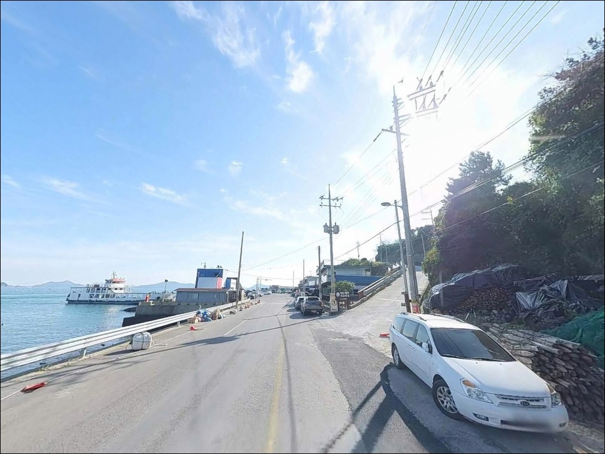
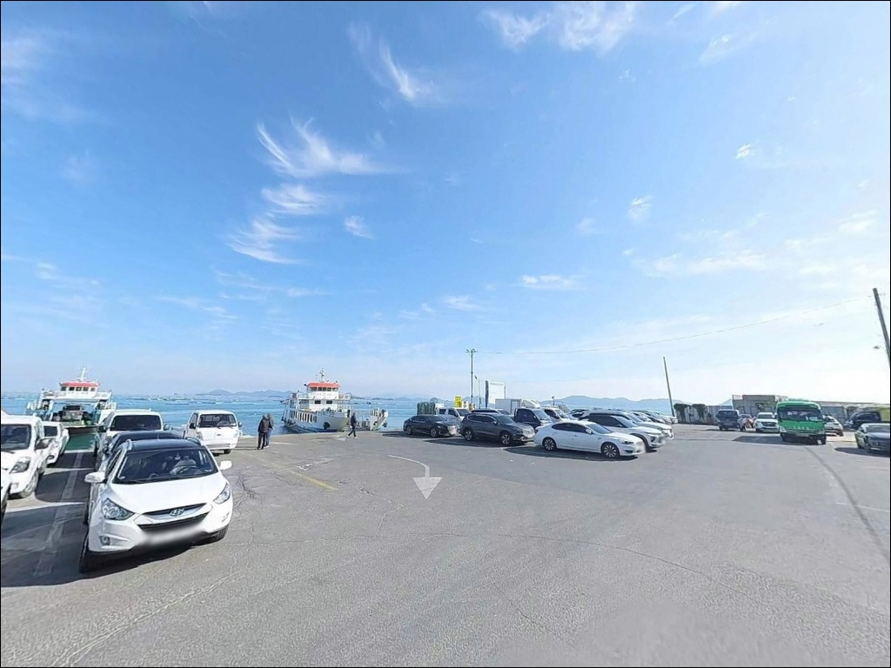
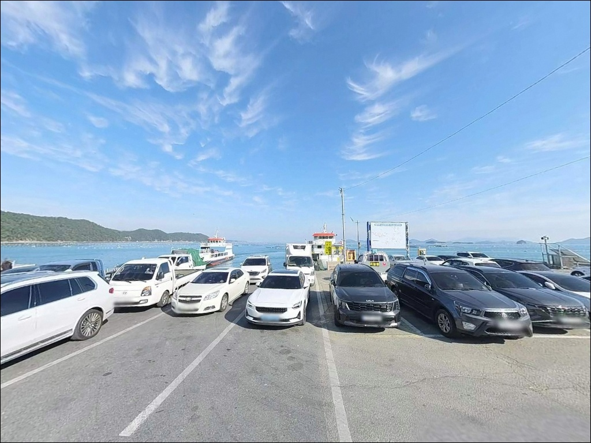
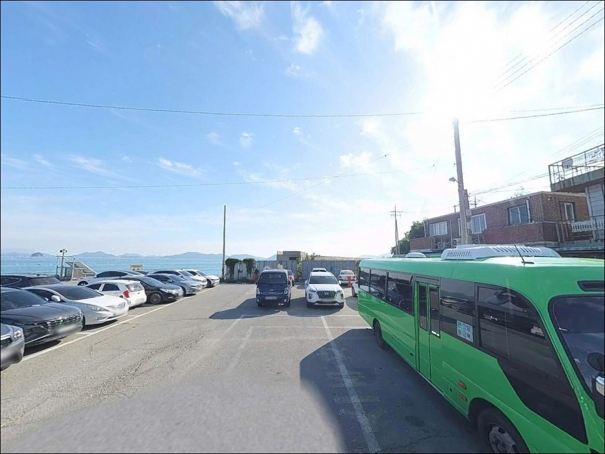
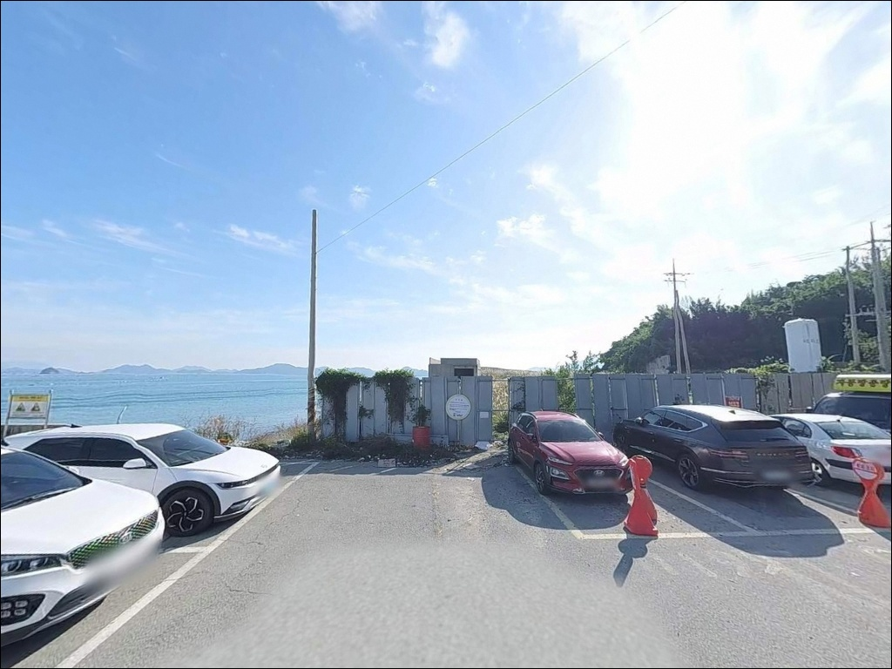
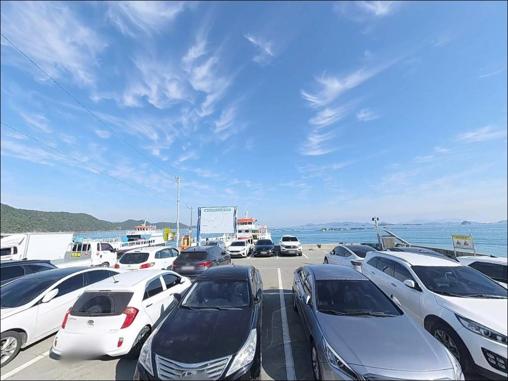
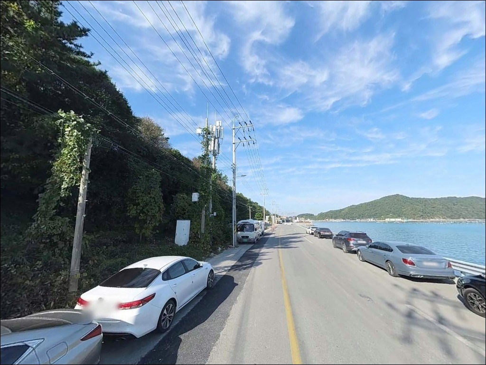

당목항, 당목항선착장, 조약도 전남 완도군 캠낚 마니아들이 추천하는 바다 차박 낚시 스팟
이 페이지에는 광고(제휴 링크 포함)가 있으며, 광고 링크를 통해 구매하면 운영자가 판매 수익 또는 수수료를 받을 수 있습니다. 포인트 사진: 카카오맵 스카이뷰·로드뷰. 이 페이지의 지도·사진 이미지는 카카오맵의 실제 서비스 이미지와 다를 수 있습니다.


포인트 안내
당목항(당목항선착장)
전남 완도군 약산면 해동리 737-17
여객선이 운항하는 항구에서 낚시 자리를 잡고
항로 방향으로 채비를 투척하면,
선박이 들어오는 순간 낚싯대를 바로 내려야 하는
상황이 반복됩니다.
채비 손실과 낚시 중단을 반복하지 않으려면
금일도·생일도행 여객선 시각표를
출발 전 반드시 확인해야 하는 포인트입니다.
완도군 약산면 해동리에 자리한 당목항은
2021년 9월 국가어항으로 지정된 여객선 터미널 겸
방파제 포인트입니다.
외항이 열린 방파제 구조와 내항 선석 경계부에서
조류 흐름이 살아 있어
원투낚시·루어·에깅 복수 방식을
동시에 운용할 수 있습니다.
이 글은 당목항의 진입 환경, 차박 여건,
낚시 지형 분석, 방식별 공략 조건에 집중합니다.
조황 단정이나 특정 어종 보장은
이 글의 범위에 포함되지 않습니다.

1. 진입 동선과 포인트 접근성
당목항은 약산대교로 고금도와 연결되고,
다시 고금대교를 통해 강진군 마량과
육지와 이어지는 구조입니다.
진입로는 해동리 해안도로를 따라
포장도로로 항 구내까지 직접 진입이 가능하며,
왕복 2차선 이상의 도로폭이 확보되어 있습니다.
금일도·생일도行 카페리 철부선이 정기 운항하는
여객항 구조라 캠핑카나 트레일러를 실은
대형 차량도 무리 없이 진입할 수 있습니다.
카페리 탑승 차량 회차 공간이
터미널 주변에 별도로 확보된 덕에
방향 전환에도 불편함이 없는 편입니다.
주차는 여객터미널 대합실 앞 대형 공터가
가장 넓고 평탄합니다.
방파제 진입로 연접 공간도 활용 가능하지만
어선 작업 차량과 혼용되는 공간이라
어선 동선을 막지 않는 자리를
먼저 살피는 편이 좋습니다.

2. 차박 환경과 야간 체류 여건
터미널 앞 대형 공터는 포장이 되어 있고
평탄해 차박 기점으로 활용하기 좋습니다.
여객터미널 시설의 외부 조명이 있어
야간에도 어느 정도 조도가 확보되는 편이며,
터미널 내 화장실 이용이 가능하다는 점도
차박지로서의 실용성을 높여줍니다.
해동리 마을은 소규모 어촌으로
민가 밀집도가 낮아 프라이버시 확보에는 유리하고,
여객선 막배 이후에는 차량 통행이
거의 없는 조용한 환경으로 바뀝니다.
다만 이른 아침 첫 운항 시간대부터
차량 이동 소음이 시작되므로,
이른 기상에 예민한 편이라면 감수해야 할 조건입니다.
외항이 열린 구조라 기상에 따라
바람 영향을 받는 경우가 있습니다.
완도 인근 해역은 계절풍에 의한
갑작스러운 파고 상승이 잦아
출발 전 기상청 해양 예보를 확인하는 것이
현장 체류의 기본 조건입니다.


3. 주변 편의시설 및 인프라 현황
당목항 반경 1km 이내에는
여객터미널 대합실과 매표소가 있으며,
터미널 내 화장실 이용이 가능합니다.
항구 인근에 민박과 식당가가 형성되어 있고,
이마트24 완도당목항점이 운영 중이라
기본 식음료 보충에 불편함이 없습니다.
반경 3km 권역에는
약산면 소재지 방향으로 이동하면
하나로마트, 주유소, 약국이 있어
출조 전 소모품을 보충하는 데
활용할 수 있습니다.
편의시설이 한곳에 몰려 있지 않은 구조라
방문 전 영업 여부를 미리 확인해 두는 편이 안전합니다.
반경 10km권으로 약산대교-고금대교를 건너
강진군 마량면 방향으로 이동하면
마량항 일대에 편의점, 주유소, 식당이
다수 확인됩니다.
장거리 출조 전 최종 보급을
이 동선에서 처리하는 방식도
현실적인 선택입니다.

4. 출조 전 반드시 챙겨야 할 준비사항
당목항 방문 전 가장 먼저 확인할 것은
금일도·생일도행 여객선 운항 시각표입니다.
정기 여객선이 오가는 항로 구간으로의
투척은 절대 금지이며,
선박 입출항 시에는 낚싯대를 내리는 것이
이 포인트의 기본 매너입니다.
항로에 걸린 채비는 선박에 위험을 줄 수 있어
주의가 필요합니다.
완도 인근 해역은 계절풍에 의한
기상 변화가 빠른 편입니다.
기상청 해양 예보와 바다타임에서
당일 파고·풍속·물때를 확인하고
출발 시각을 정하는 것이 조과와 안전을
동시에 지키는 기본 방식입니다.
외항 방파제 테트라포트 구간은
이끼와 습기로 미끄러운 환경이므로
전용 신발과 구명조끼는 필수입니다.
또한 차량을 선착장 끝까지 접근시키는 것은
추락 위험이 있는 행동으로 금지해야 합니다.
야간 낚시 시에는 헤드랜턴을 반드시 챙기십시오.

5. 여객선 운항 시간대가 낚시 여건을 바꾸는 이유
당목항의 지형은 내항과 외항 두 구간으로 구분됩니다.
내항은 여객선이 접안하는 선석 중심 구조로
석축과 콘크리트 직벽이 안쪽을 둘러싸고 있고,
외항 방파제는 테트라포트가 설치된
남해 국가어항 표준 구조입니다.
방파제 끝단으로 갈수록 수심이 급변하며
조류 흐름이 강해지는 구간이 형성됩니다.
항이 고금도-조약도-신지도를 잇는
수도(水道) 구간에 위치해
조류 소통이 활발한 편입니다.
간조 시에도 일정 수심이 유지되는 구간이 많아
물때 영향이 상대적으로 적은 편이지만,
중들물 이후 방파제 끝단은
조류 변화가 커 루어 반응이 살아나는 자리입니다.
최신 조황은 출조 전 검색을 먼저 해보시기 바랍니다.
바닥 지형은 모래와 혼합 지형으로
원투 채비가 안착하기 좋은 구조를 갖추고 있습니다.
항구 주변에는 전복·다시마 양식장이 인접한
청정 수역이라 수산 자원 여건도 양호합니다.
야간에는 터미널 조명이 수면을 비춰
집어 효과가 발생하는 조건이 형성됩니다.


6. 포인트에 어울리는 낚시 스타일
이 포인트에서 가장 잘 맞는 방식은
원투낚시입니다.
외항 방파제 끝단에서 외해 방향으로
채비를 멀리 보내면
항로 주변의 깊은 수심과
모래·혼합 바닥 지형을 공략할 수 있습니다.
붕장어·도다리·보리멸 계열이
기대 어종으로 꼽힙니다.
에깅도 이 포인트에 잘 어울리는 방식입니다.
약산도 일대 해역은 청정 수역으로 알려져 있으며,
방파제 콧부리와 내·외항 경계부는
갑오징어 은신처 조건을 갖춘 구간입니다.
해질 무렵 중들물부터 중썰물 시간대에
집중해서 공략하는 것이 효율적입니다.
루어낚시(워킹)는 방파제 석축과
외항 테트라포트 구간을 천천히 걸으며
농어·우럭·볼락 계열을 노리는 방식입니다.
야간 항내 조명이 집어 역할을 해주어
선착장 주변을 워킹하면 볼락 반응이 살아나는
조건이 형성됩니다.
찌낚시는 중들물 이후 방파제 끝단에서
감성돔을 노리기에 적합한 구간입니다.

7. 대안 포인트와 플랜 B 동선
당목항 조류가 너무 강하거나
여객선 운항 시간대와 낚시 타이밍이
맞지 않을 때는
득암항이 첫 번째 대안입니다.
당목항에서 차량으로 3~4km 거리이며,
조약도(약산도) 동일 해역의 방파제로
수심 조건과 낚시 패턴이 비슷한 편입니다.
약산면 소재지 방향으로 이동하면
해동리 방파제와 장용리 방파제가
인근 권역에 위치합니다.
규모는 작지만 여객선 운항 간섭 없이
조용하게 낚시를 이어갈 수 있는 구조입니다.
바다낚시 여건이 불리한 날에는
약산면 내 약산호에서
민물낚시를 대체 선택지로 활용할 수도 있습니다.
차박 환경이 맞지 않을 때는
약산면 가사리에 위치한
가사해수욕장 주차장이 대안입니다.
넓은 주차장과 화장실이 갖춰져 있고
해변 조망도 확보되는 공간입니다.
또는 고금대교 인근 고금도 해안도로 갓길에서
여객선 소음 없이
조용한 바다 조망과 함께 차박하는
동선도 현실적인 선택입니다.

여객선 시간표 하나 챙기면
당목항이 달리 보입니다
원투낚시와 에깅, 루어까지
복수의 낚시 방식을 한 포인트에서
운용하고 싶은 낚시인에게
당목항 방파제는 잘 맞는 구조입니다.
외항이 열린 방파제 끝단은
조류 변화가 크고 수심이 급변해
원투낚시 효율이 높아지는 자리이며,
야간에는 항내 조명이 집어 역할을 더해줍니다.
여객선 운항 시각을 미리 확인하고
낚싯대를 내리는 것이
이 포인트 방문의 기본 매너입니다.
이 조건을 지키는 낚시인에게
당목항은 터미널 화장실, 대형 주차장,
인근 편의점까지 갖춘
인프라가 안정적인 남해권 포인트입니다.
화장실과 편의점이 갖춰진 항구에서
하룻밤 머물며 방파제 낚시를 즐기는
차박 낚시인이라면,
여객선 시간표 하나 확인해 두는 것만으로
만족스러운 출조를 기대해볼 수 있는 곳입니다.